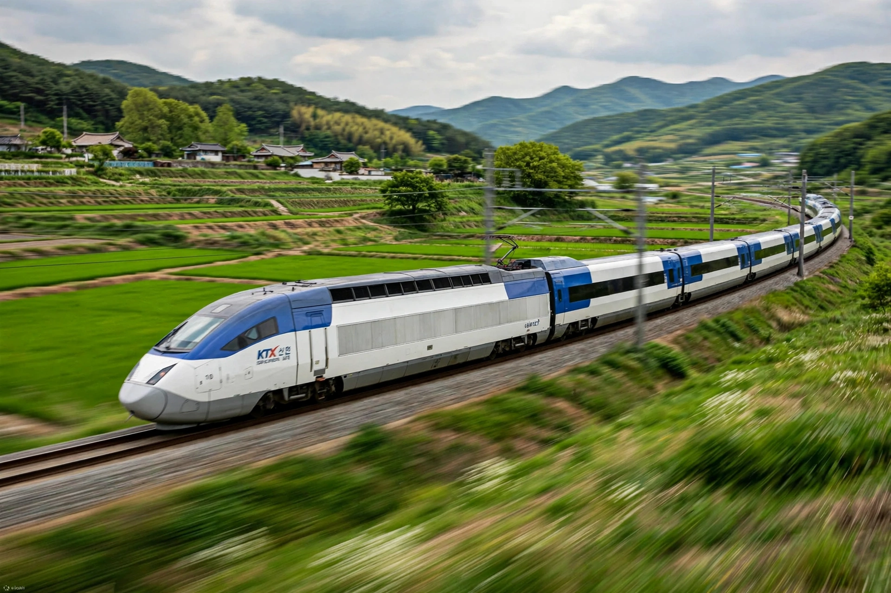

The Korea Train Express (KTX; Korean: 케이티엑스, Keitieksseu) is South Korea's high-speed rail system, operated by Korail. Construction began on the high-speed line from Seoul to Busan in 1992, and KTX services were launched on 1 April 2004. The system was built with French TGV technology transferred under licence, and its first-generation trains, the KTX-I, were derived from the TGV Réseau. KTX trains achieve a top commercial speed of 305 km/h, cutting the Seoul–Busan journey from over four hours by conventional rail to about two hours and twenty minutes.

| Operator | Korail |
|---|---|
| Launched | 1 April 2004 |
| Top speed | 305 km/h (commercial) |
| Main lines | Gyeongbu HSR, Honam HSR |
| First trains | KTX-I (TGV-derived), built by Alstom and Rotem |
South Korea chose French TGV technology in 1994 after competition from German ICE and Japanese Shinkansen consortia; the agreement included extensive technology transfer that enabled domestic production. The Gyeongbu high-speed line opened in two phases — Seoul–Dongdaegu in 2004, using upgraded conventional track onward to Busan, and the fully dedicated Dongdaegu–Busan section in 2010. The Honam high-speed line to Gwangju and Mokpo followed in 2015.
The fleet includes the KTX-I, the domestically developed KTX-Sancheon (named after the Korean mountain trout), introduced in 2010, and the KTX-Eum, a distributed-traction train launched in 2021 on upgraded conventional lines. The experimental HEMU-430X reached 421.4 km/h in 2013, among the fastest speeds recorded on conventional rails. Since 2016 KTX has faced competition from the privately operated SRT service from Suseo station in southern Seoul.
KTX transformed domestic travel in South Korea, capturing the majority of the Seoul–Busan market from air travel and reshaping commuting and regional development along its corridors. Annual ridership has exceeded 60 million passengers.